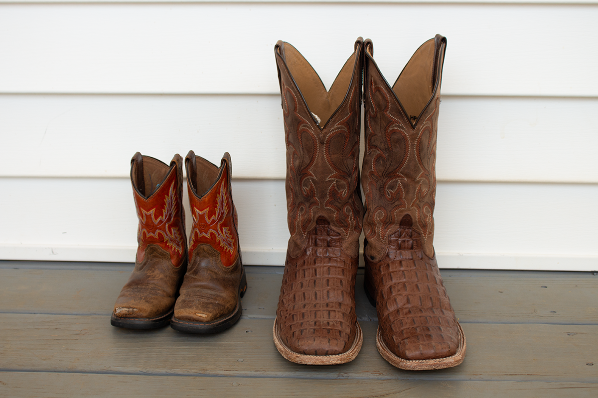

A family on the east side reported that their child appeared to age approximately three years between consecutive evenings. The change was first noticed during morning routine and later confirmed through comparison with recent photographs. Guardians stated that, aside from the absence of expected developmental stages, daily behavior and communication patterns remain consistent with current observations. No disruptions to household routines have been reported, and the situation has been described as stable by those involved.
